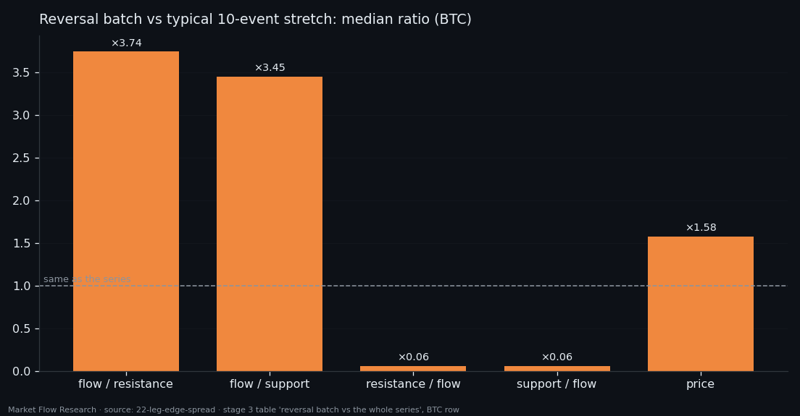
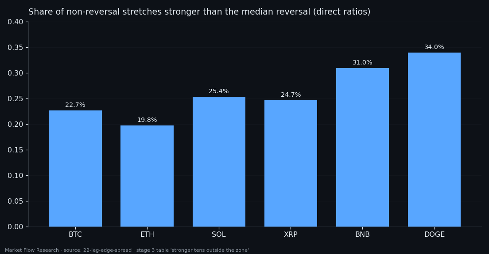
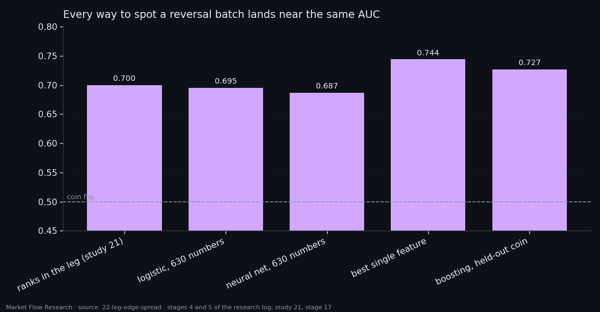

A Reversal Has No Signature of Its Own — One in Four Ordinary Stretches Looks Stronger
Around a 2.3% pivot the order book changes in multiples: flow ratios two to five times bigger, book-per-flow ratios three to seventeen times smaller. That sounds like a fingerprint. It is not. One in four continuous 10-event stretches far from any pivot is stronger still, the strongest is 47 times stronger than the strongest reversal, and a neural network on all 630 numbers of a reversal batch reaches the same AUC as a straight line: about 0.70. The reversal is a shift of the same distribution, not a different kind of event.
① The edge of a leg is five events
This study works with one class, `210×10-1×7d/d` from the previous article: seven derivative ratios over nine 21-second blocks. Along a leg the seven features spread widely near both pivots and bunch together in the middle. The first question was practical: how many events from each end of a leg count as its "edge"?
Three different measures gave one answer: five events (1% of an average leg is also 5.3 events). The spread falls monotonically with the width of the edge — no peak in the middle — and five events keep 0.69 of the maximum 0.71. The end of a leg separates features less than its start (0.62–0.66 vs 0.69–0.71), the same asymmetry as before: the trace of a reversal is clearer than the approach to the next one. All the spread is carried by magnitude (`abs` 0.694); smoothness sits below chance (0.313).
The reversal zone was then fixed as seven events before the pivot, the pivot and two after — 10 events. Across six coins it covers 1.91% of the 402,725 events (701 pivots). Inside it the direct ratios (flow per level) are 2–5 times their typical size, the inverse ratios 3–17 times smaller, and price moves only 1.3–1.6 times more — the book changes in multiples while the candle barely grows. The peak is the pivot event itself.

② Strong is not special
If size were the signature, the strongest stretches of the series would be reversals. So the series was scanned with a 10-event window, one step at a time, keeping only windows that never touch a reversal zone — 230,262 of them.
24.9% of those windows are stronger, on the direct ratios, than the median reversal batch — every fourth stretch, stable across coins (19.8–34.0%). On BTC the strongest non-reversal stretch scores 766,306 against 16,169 for the strongest reversal: 47 times more. And the map of the top 1% of these stretches is literally "a reversal, only brighter": the same pattern, five times more intense, with no pivot anywhere near.
So the size of the moves does not define a reversal. What would have to separate them is something else — which is what the rest of the study looks for.

③ Nothing unique: every test lands at 0.70
Four ways to find a signature, each one more demanding.
Models on the raw batch. All 630 numbers of a reversal batch into a logistic regression and a small network. Validation AUC 0.695 and 0.687; the network scores 1.000 on train — it memorised 437 reversals with more parameters than examples. Taking the most confident batches gives about 5% reversals instead of 2%. A UMAP of the batches shows reversals scattered through the whole cloud, with no region of their own.
62 hand-made features per batch — magnitudes, ratios, spreads, and "turn" features built to catch a change of direction inside the batch. The best single feature reaches 0.744. The turn features: 0.51–0.56, a coin. A sign change inside the batch is no more frequent at a reversal than anywhere else. Only one of 437 reversals, on BNB on 1 June, lies outside the range of ordinary stretches on any feature.
A tighter threshold. If reversals had a border, precision would climb toward one behind it. It stalls at 1.1%: the five reversals that pass the strictest cut arrive with 440 ordinary stretches that pass it too.
Trees and neighbours. Gradient boosting on all 62 features, trained on five coins and scored on the sixth: AUC 0.727, and no reversal scored above all 204,348 others. In the 62-dimensional space the nearest ordinary batch is usually closer to a reversal (median distance 3.66) than the nearest other reversal (4.65).
The reversal is a shift, not a different nature: the same distributions, displaced — flow ratios up, book ratios down. Three unrelated formulations stop at the same ~0.70. That number is the property of the class, not of the model, and it is what the next studies try to break with better questions rather than bigger networks.

Reproduce this study
- Research log (.md, Ukrainian): goal, data, plan, scripts, every confirmed stage and table — enough to rerun the study
- Reproduction kit (.zip): the study's scripts, project rules and base scripts that build every class
If this changed how you read the tape, the natural next step is Volume Is the Fuel — Not the Steering Wheel — We recorded the Binance order book every second for six coins over five months and ran eighteen tests on what volume really does.
Volume Is the Fuel — Not the Steering Wheel
We recorded the Binance order book every second for six coins over five months and ran eighteen tests on what volume really does.
About Market Research Lab — What We Collect and Why
Most market commentary is storytelling.
From Calm to Calm: a Standard for What Counts as a Signal (BTC)
We stopped defining market signals with a stopwatch.
The Wall That Goes Quiet: What Resting Liquidity Predicts
We measured resting limit liquidity sitting on both sides of the book second by second across six coins, and asked the only question that matters:….
Comments
Discussion is powered by GitHub. Enable it by adding secrets/giscus.json (repo IDs from giscus.app).